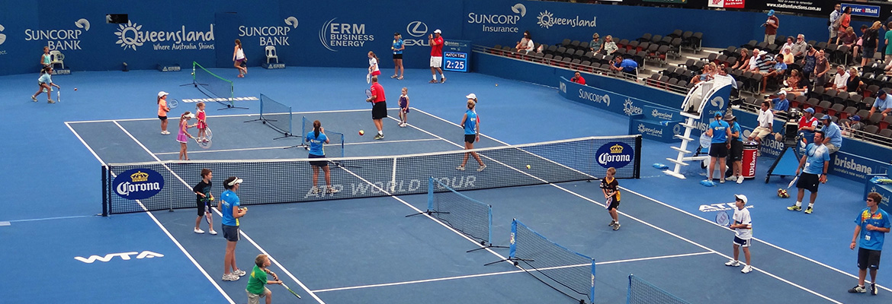

Marler Tennis Akademie
Marler Tennis Akademie создана в 2005 основной целью академии является развитие и популяризация российской теннисной школы за рубежом.
Наша Теннисная Академия создает все необходимые условия для профессиональной подготовки игроков высокого уровня. Развитие индивидуальных качеств игрока, его технических и тактических навыков, общефизической готовности и психологической подготовки являются основными составляющими тренировочного процесса. Видеоанализ, теоретические занятия, дополнительные индивидуальные занятия с тренером, а также сопровождение и участие в турнирах различного ранга завершают комплексную организацию этого процесса.
Tренерами нашей академии накоплен большой опыт тренерской работы, выработаны собственные уникальные методики подготовки, воспитано много игроков любителей и профессионалов.
Специализацией академии является профессиональная подготовка и организация тренировочного процесса для всех игроков, желающих значительно повысить свой уровень игры.
Помимо профессиональной подготовки нашей академией проработано и организовано обучение детей с юных лет, начиная с подготовительных занятий для 5-6 лет, переход от них к более интенсивным для 7-10 лет и далее целенаправленным от 11-12 лет.
Также нами организуются турниры и совместные мероприятия с нашими клубами-партнерами, проводятся тренировочные сборы.
Наша Академия уже сотрудничает с различными учебными заведениями и Теннисными Клубами.
Место расположения основной летней тренировочной базы: Germany, Dortmund Johannes-Gronowski str.20, а также собственной в Germany, Dorsten Midlicher Kamp 11
Наши тренеры:
-
ПАЛЕНОВ ДМИТРИЙ - Руководитель Академии

-
ЦИЛЛИК ИГОРЬ - Тренер по Атлетике и ОФП

-
МЕГЛИНСКАЯ АНАСТАСИЯ - Сертифицированный тренер по теннису. Игрок WTA top 600

-
СОЛОМАТИН ВЛАДИСЛАВ - Сертифицированный тренер по теннису. Тренер сборной Украины

Стоимость и проживание
Стоимость обучения в евро по базовой тренировочной программе:
По желанию спортсмены могут разместиться в апартаментах нашей академии с 3-х разовым питанием.
Вариант 1: Стоимость обучения без проживания и без питания
Вариант 2: Стоимость обучения с проживанием и 3-х разовым
питанием
| Наименование | летом (с 15 апр. по 30 сент.) | зимой (с 1 окт. по 14 апр.) | ||
|---|---|---|---|---|
| неделя | месяц | неделя | месяц | |
| вариант 1 | 400 | 1600 | 450 | 1800 |
| вариант 2 | 550 | 2200 | 600 | 2400 |
Специальные цены для игроков ATP, WTA, ITF и TE турниров:
В нашей академии предусмотрены скидки, зависящие от позиции игрока в соответствующем рейтинге (ATP, WTA, ITF, TE), а также от его позиции в национальном рейтитге. Cуществуют скидки для игроков, которые выступают в национальных командах. Bce скидки распространяются исключительно на стоимость тренировочного процесса.
| Скидка | 100% | 50% | 30% |
|---|---|---|---|
| ATP/WTA Single | 400 | 800 | 1000 |
| ATP/WTA Double | 150 | 300 | 500 |
| ITF | 100 | 200 | 300 |
| TE | 50 | 100 | 150 |
А также мы работаем по индивидуально составленным программам, наилучшим образом подходящих игроку, в зависимости от его возраста, подготовки и цели пребывания в академии.
Магазин Babolat
Мы предлагаем до 60% скидки на спортивную одежду, ракетки и прочий теннисный инвентарь.
А также нами предоставляются скидки на товары Wilson, Head, Yonex.
Школьное обучение
Ученики нашей Академии имеют возможность экстерном продолжить своё школьное обучение в Государственной общеобразовательной школе при Генеральном Консульстве России в Бонне с получением по окончании обучения документа государственного образца.
Подробности на сайте: www.ruskonsulatbonn.de/ru/school
Также получить немецкое школьное образование с последующим
поступлением в высшие учебные заведения Германии. Обучение в немецкой
школе происходит в первую половину дня.
При такой форме обучения тренировочный процесс для игрока будет
выстроен исходя из школьного расписания с ежедневными 2-3 часовыми
тренировками по теннису (около 15 часов в неделю).
Наши контакты вы можете посмотреть, кликнув по ссылке.
Контакты
| Моб. | +49-178-7175486 (Дмитрий Палёнов - руководитель академии, тренер) |
|---|---|
| Тел./Факс | +49-2365-84399 (Дмитрий Палёнов - руководитель академии, тренер) |
| info@intertennis.ru | |
| Почтовый адрес |
Marler Tennis Akademie, Friedrichstr. 22, 45772, Marl, Germany
Интернет: http://intertennis.ru/ |
| Наши представители на Украине |
Соломатина Наталья Александровна г. Киев, ул. Туманяна, д.8, кв.
122 тел. +380672091902, E-mail: nsolomatina2203@gmail.com |
Вы можете задать свой вопрос:
* Поля обязательные для заполнения